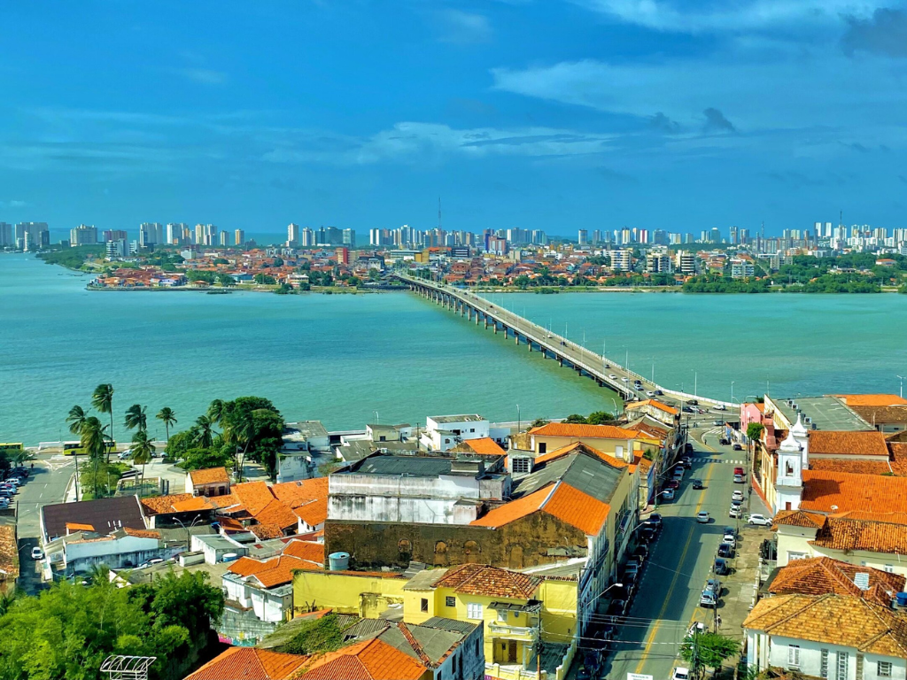

O estado do Maranhão está localizado na região Nordeste do Brasil e possui uma grande diversidade cultural, histórica e natural. Sua capital é São Luís, conhecida pelo centro histórico com construções coloniais e pelas tradicionais festas populares, como o Bumba Meu Boi. O Maranhão também se destaca por suas belas paisagens naturais, especialmente o Parque Nacional dos Lençóis Maranhenses, famoso por suas dunas e lagoas cristalinas. A economia do estado é baseada na agricultura, pecuária, indústria, comércio e turismo, atividades que contribuem para o desenvolvimento da região.

Voltar